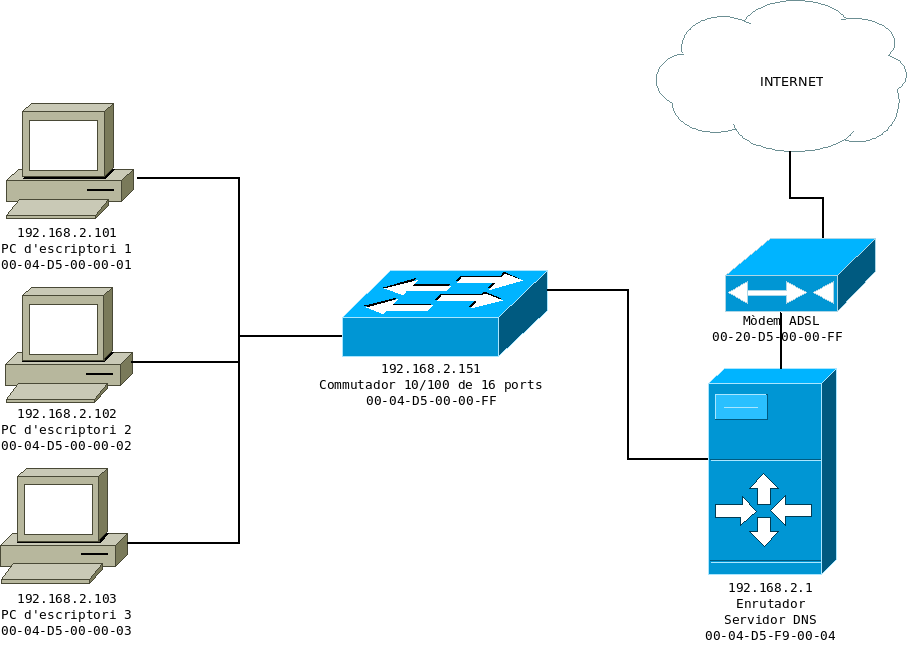

3. El servei DHCP
prácticas
caso práctico
Dado el siguiente esquema y suponiendo que el enrutador de internet dispone de un servicio DHCP funcional, crea el archivo de configuración de DHCP para que haya:

licencia:CC BY-NC-SA
- Una reserva para el conmutador.
- El resto formarán parte del intervalo de asignación dinámica.
- Una vez creado el fichero de configuración las direcciones IP del esquema será uno de los escenarios posibles.
- El tiempo predeterminado de conexión será de 20 minutos y el máximo 50.
- Escribe el archivo de configuración interfaces del enrutador de Internet. Supongamos que es un equipo con Ubuntu.
# Ejemplo básico de configuración dhcpd.conf
subred 192.168.1.0 máscara de red 255.255.255.0
{
rango 192.168.1.11 192.168.1.29;
opción servidores de nombres de dominio 192.168.1.1, 193.146.96.2, 193.146.96.3;
opción nombre-dominio"uimagen.iaf";
enrutadores opcionales 192.168.1.1;
opción máscara de subred 255.255.255.0;
opción dirección de transmisión 192.168.1.255;
tiempo de arrendamiento predeterminado 86400;
tiempo máximo de arrendamiento 172800;
host apache
{
Ethernet de hardware 00: 10: 5a: f1: 35: 87;
dirección fija 192.168.1.3;
}
}Llicenciat sota la Llicència Creative Commons Reconeixement CompartirIgual 4.0